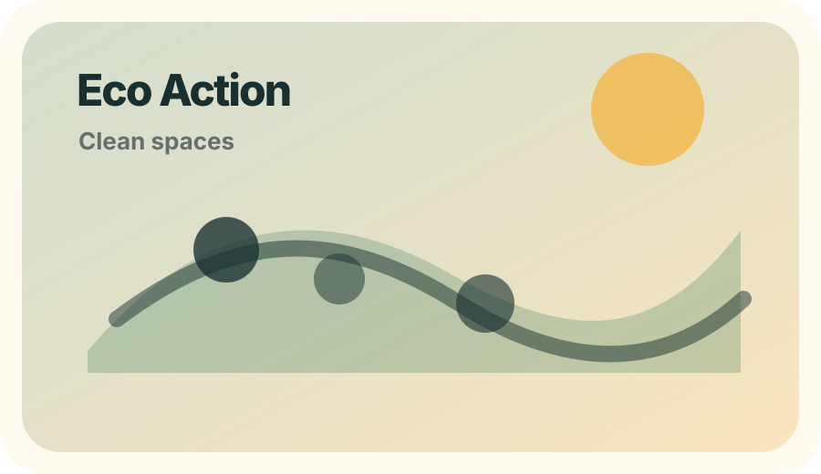
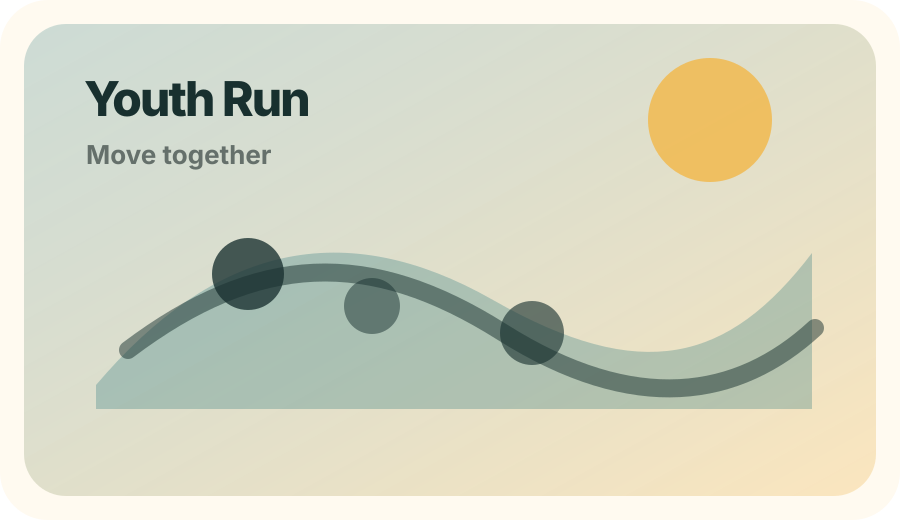
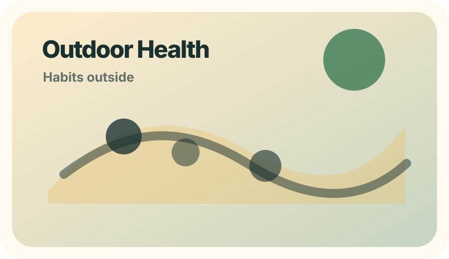

Action-first
Every idea should become a visible activity, pilot, event, or public contribution.
Baku · Ecology · Sport · Youth Action
Youth Collective is a youth-led initiative in Azerbaijan using ecology, sport, and public engagement to build healthier habits, stronger community participation, and a more meaningful outdoor culture.
What we are building
Youth Collective organizes outdoor actions that combine movement, ecology, and community life. The goal is simple: help teenagers spend more time outside, connect with people, and take responsibility for the places they use every day.
Every idea should become a visible activity, pilot, event, or public contribution.
The project reflects Baku’s summer light, public spaces, seaside energy, and youth culture.
We track participation, cleanups, activity hours, and stories that show community value.
The initiative is built with roles, pages, systems, and plans that can grow over time.
Focus areas
Cleanups, awareness actions, recycling habits, and care for shared public spaces.
Runs, outdoor challenges, group movement, and accessible physical activity for teens.
Healthy routines, less isolation, better energy, and a stronger relationship with the body.
Friendship, youth leadership, shared responsibility, and a culture of showing up.
Impact model
Upcoming direction

A low-barrier outdoor cleanup combined with walking and youth conversation.

A friendly run focused on movement, consistency, and community energy.

A practical event about sunlight, routines, walking, stretching, and teamwork.
Be part of it
Join an event, bring a friend, document impact, help organize, or support the next public action.